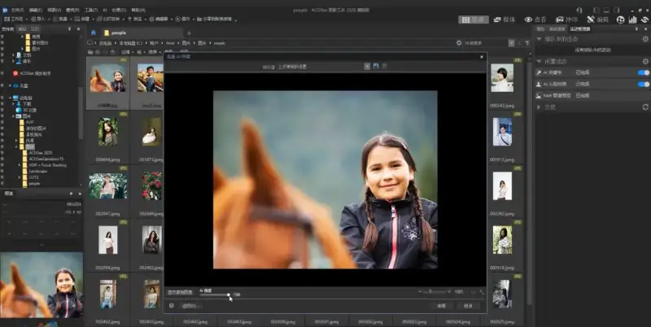
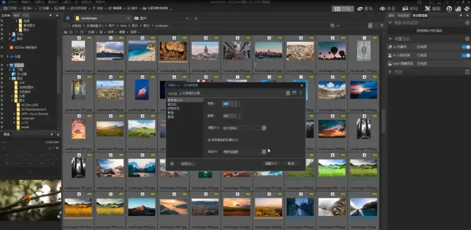
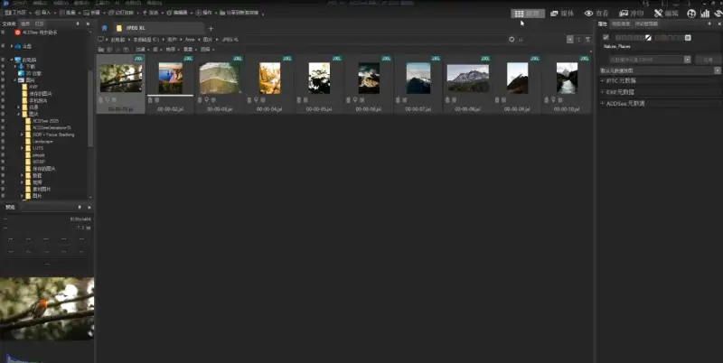

ACDSee Systems has led digital asset management and creative editing for more than 30 years. It recently released the new ACDSee Photo Studio 2026 series. This series combines leading AI technology with performance upgrades. Its core is local intelligence, fast and under your control. It redefines the digital visual workflow for photographers and creators. The new creative features give photographers and creative professionals new levels of efficiency and creative freedom.
The ACDSee Photo Studio 2026 series includes the Ultimate, Professional, and Home editions. It meets the image management and editing needs of millions of users across many fields.
ACDSee Photo Studio 2026 is not just another update. It is a rebuild of ACDSee's core technology. It adds next-generation AI-driven management and editing features. These bring a big speed gain, so users manage large libraries more smartly and quickly, and spend more time on creating. At the same time, all AI features run on the local device. No cloud server is involved. This keeps privacy safe and makes complex tasks fast and easy.
Here are the core strengths of ACDSee Photo Studio 2026.
AI-driven detailed management and editing system
AI noise reduction: it uses advanced machine learning to spot and remove pixel noise in photos, while keeping important details sharp. Whether an image is shot at high sensitivity or is a grainy instant grab, one click restores a clean frame. The image stays natural, clear, and bright. It supports batch processing, which cuts editing time a lot. Each photo ends up clean, rich in detail, and true to life.

AI hair mask: with ACDSee's easy AI hair mask, one click selects the hair, and your editing speed doubles. This feature adjusts the hardest part of portrait work on its own, the color and light of the hair. It does not affect the rest of the image.
AI face edit: beyond skin smoothing, eye and brow adjustment, nose shape, and teeth whitening, the 2026 version adds control over hair. You can adjust hair color and sharpness. The new spot removal tool blends blemishes easily without changing the overall skin texture. Portraits look natural and not all the same.
AI keywords: the local AI analyzes images and assigns keywords to photos on its own. You can search your whole library without adding data by hand, and find the photo you need fast.
Groundbreaking performance and workflow improvements
New engine, fast response: thanks to deep tuning of the core engine, ACDSee Photo Studio 2026 is much faster at startup, browsing, batch processing, and applying filters. It runs especially smoothly on very high-resolution RAW files.
Improved activity manager and tabs: the activity manager in the ACDSee 2026 Ultimate edition has grown. The ACDSee tabs are also improved. Managing and browsing photos is faster and easier.

Breakthroughs in format support and video management
The 2026 version adds support for JPEG XL (JXL). This new format gives high compression and lossless quality. Whether you store many photos or send high-definition material, it saves storage space and transfer time.

The built-in camera RAW support library is updated. It now covers hundreds of major camera models worldwide, including several newly released flagship cameras. Professional users can edit RAW files directly without quality loss, and keep the richest image data.
New video metadata management auto-sorts video files, and adds advanced search and tag management. It closes a gap that existed in asset management.
Today, image content grows fast, and both work speed and data security matter more. The ACDSee Photo Studio 2026 series uses AI to lower the skill gap for professional work. Its no-cloud design protects user data ownership. It gives photographers, content creators, and corporate asset managers a solution that balances speed and safety.
ACDSee Photo Studio 2026 is now available. We welcome all users to download it from the ACDSee website and try the faster, easier AI-driven digital asset management and editing experience.